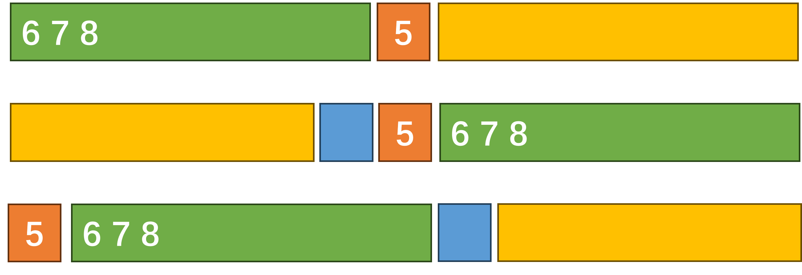

【算法竞赛】补题 II
CF1746E1 Joking
- 这是一道交互题。交互库有一个不超过 $10^5$ 的数 $x$。你可以询问一个数集 $S$，交互库会给出是否有 $x \in S$。然而，这个傻逼交互库可能会说谎。但它不会连续两次说谎。你有不超过 82 次询问机会和 2 次回答机会。2 次回答正确一次即为成功。
感觉是一道好题。不过听说和 IMO2012 的 idea 重了。
首先，我们发现如果确定范围里有两个数，那肯定是解决不掉了。交互库可以恶心你，让你始终找不到这两个数哪个是对的（自证）。
不过这道题给了我们 2 次回答的机会。因而这道题还是可做的。这道题最关键的部分，在于找到三个数的解法。如何将三个数确定到两个数。假设这三个数分别为 $A,B,C$。
我们问两次是否 $x \in {A}$。如果两次均为否，那么 $A$ 排除。
如果回答了一次是，我们问 $B$。若回答为是，那么 $C$ 排除。若回答为否，那么就是 $A$。
当剩余范围超过三个时，把它分为三组照上做就可以了。通过不超过三次询问，我们可以至少缩小 $1/3$ 的范围。
不得不说非常巧妙。尤其是加粗的部分。
赛时只在想二分，一直没弄出来。根本原因是没有注意到，$n=2$ 时是根本无法确定的。（脑子糊了）
其实也想过三分，不过没有深入想，可惜了。
CF1746F Kazaee
- 一个数列，两种操作。修改：单点修改。查询：查询 $[l,r]$ 内所有数出现的次数是否都是 $k$ 的倍数。
注意到如果查询是 YES 的话，那么 $[l,r]$ 内的和一定整除 $k$。故而我们可以深挖这一性质。
随机选择 30 个 subset，关注 $[l,r]$ 内的所有在这个 subset 里面的数，若它们的和是 $k$ 的倍数，我们就输出 YES。
CF1870E Another Mex Problem
- 一个数列，选择若干个互不相交的连续子区间，求这些子区间的 mex 的异或和的最大值。$n \leq 5000$。
朴素的一种 dp：$f_{i,x}$ 表示只考虑 $[1,i]$ 这个前缀能否达到 $x$。（f 的值为 0 or 1）这个 dp 可以在 $\Theta(n^3)$ 内完成。
考虑优化。我们可以证明「有用」的 mex 区间至多只有 $2n$ 个。（当一个大区间包含了一个小区间且它们 mex 值相同，我们认为这个大区间是无用的）。于是 dp 可以优化到 $n^2$。
CF1879E Interactive Game with Coloring
- 题意略。
最暴力的染色方式：把 $(p_i, i)$ 这条边染成 $depth_i$ 的颜色。然后可以很简单地往上跳。
如果能想到这一点，实际上就走出了正解的一半。可以把所有颜色对 3 取模，然后发现依然可以确定父亲的方向。
所以答案一定小于等于 3。显然答案为 1 的情况只可能是菊花图，那么我们只需要找到答案为 2 的情况就可以了。
如果我们只有两种颜色，显然对于一个点 $u$（父亲为 $f$，儿子为 $v_1,v_2,\cdots,v_m$）。显然连向父亲的边必须具有独一无二的颜色——也就是说，若 $(f,u)$ 的颜色为 A，那么 $(u,v_i)$ 的颜色全部必须为 B。（*）
似乎这样很简单就可以实现？事实上，问题出在 $m=1$ 的情况。在这种情况下，我们无法确定是在往上走，还是在往下走。
唯一的结局方案是进行某种「统一」，也就是说对于所有度数为 $2$ 的非根点 $u$，把 $(f,u)$ 强制设为颜色 1，把 $(u,v)$ 强制设为颜色 2。
我们事先把这些度数为 2 的点全部处理好，然后按照规则（*）对其他的边进行染色。如果最后有一个不冲突的方案，那么答案为 2，否则答案依然为 3。
CF1882E1 Two Permutations (Easy Ver)
- 两个排列 $p$ 和 $q$，长度分别为 $n$ 和 $m$。每次可以进行一种操作 $(i,j)$，把 $p$ 和 $q$ 分别以下标 $i$ 和 $j$ 为翻转中心进行一种翻转。例如，$p$ 会从 $p_1, …,p_{i-1},p_i,p_{i+1},…,n$ 变为 $p_{i+1},…,n,p_i,p_1, …,p_{i-1}$。$q$ 同理。构造一种长度不超过 $10^4$ 的操作序列使得两个序列分别变为 $1,2,…,n$ 和 $1,2,…,m$。$n, m \leq 2500$。
只考虑单个排列的话，我们有如下的策略。

也就是说我们可以在两步内完成一个数字的排位。分开来看，我们分别至多只用 $2n$ 和 $2m$ 个步骤就可以完成两个排列的排序。
假设实际使用的步数分别为 $tot_p$ 和 $tot_q$。不妨设 $tot_p>tot_q$，如果 $tot_p-tot_q$ 是偶数的话，我们可以通过 $[1,m,1,m,…,1,m]$ 来对排列 $q$ 进行周期为 2 的「不动」操作。
若 $tot_p-tot_q$ 是奇数，上述操作无法进行。考虑如果 $n$ 和 $m$ 中有一个为奇数（不妨设为 $n$），我们可以通过对排列 $p$ 进行 $[1,2,…,n]$ 进行「不动」操作，同时使得 $tot_p-tot_q$ 变为偶数，于是又可以用上面的步骤完成对齐。
若 $tot_p-tot_q$ 是奇数，并且 $n$ 和 $m$ 均为偶数，那么无解。证明如下：
对于长度为偶数 $n$ 的排列 $p$，假设某一次以 $i$ 为中心进行翻转。不难发现，这会导致 $K=(i-1)+(n-i)+(i-1)(n-i)$ 个数对的先后关系反转。当 $n$ 为偶数，显然 $K$ 为奇数。一个数对的先后关系反转将会导致整个数对的逆序对数 +1 或者 -1，不妨设这 $K$ 个数对导致了逆序对数增加了 $K_1$，减少了 $K_2$。由于 $K=K_1+K_2$ 且 $K$ 为奇数，故而 $K_1-K_2$ 一定也是奇数。也就是说，只要我们进行了一次操作，排列 $p$ 的逆序对数目的奇偶性就一定会反转。
当 $n,m$ 均为偶数时，若 $tot_p-tot_q$ 是奇数，显然无论怎么操作，排列 $p$ 和排列 $q$ 永远无法同时到达逆序对为 $0$（偶数）的状态。所以此时无解。证毕。